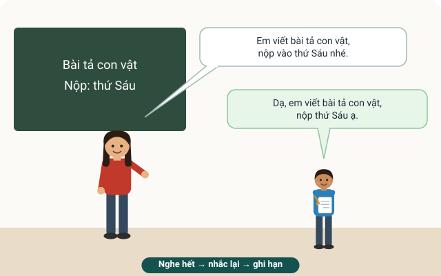
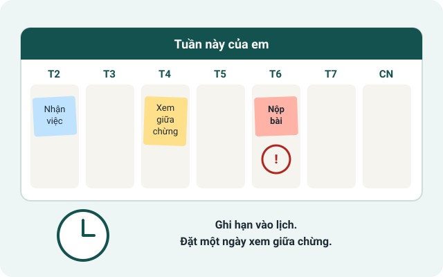
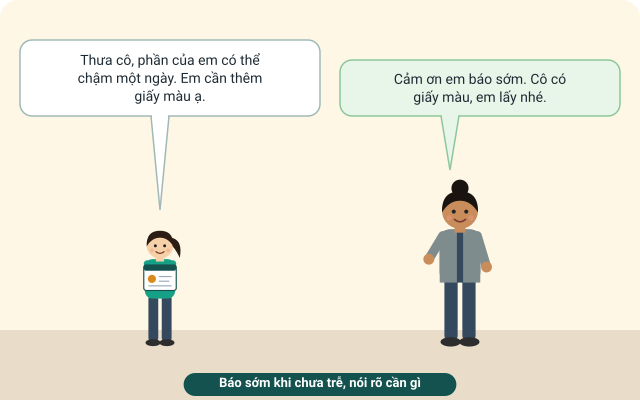

K5 · Lập kế hoạch và giữ cam kết công việc › Bậc 1 Làm quen
Nhận việc và giữ hẹn
Dành cho người lớn. Bài này dạy cách làm, không giảng đạo đức. Thay vì nói "con phải có trách nhiệm", hãy cùng trẻ luyện từng bước cụ thể.
- Chuẩn bị: mẫu lịch tuần hoặc một tờ giấy chia 7 cột, giấy nhớ.
- Trẻ lớp 4–5: người lớn đóng vai người giao việc, trẻ luyện nhắc lại bằng lời. Trẻ THCS: tự lập lịch tuần.
- Khi trẻ báo sớm, hãy cảm ơn trước khi hỏi lý do. Trẻ sẽ dám báo sớm lần sau.
- Trách nhiệm như một phẩm chất được bàn ở daynentang.com.
1. Mục tiêu
- Nhận một nhiệm vụ và nhắc lại: làm gì, xong khi nào.
- Báo sớm khi thấy mình có thể trễ, kèm điều mình cần.
2. Khởi động truy xuất
- Bảng nhiệm vụ nhóm có 3 cột nào?
- Kể 2 trong 4 việc của một đồng đội tốt.
Đáp án
- Ai – Làm gì – Xong khi nào.
- Làm xong phần mình; lắng nghe bạn; chia sẻ đồ dùng, thông tin; hỏi khi cần giúp và giúp khi bạn cần.
Xem lại: Cùng nhau hoàn thành nhiệm vụ.
3. Giải thích
Người làm nghề luôn nhận việc và hẹn ngày xong. Thợ may hẹn ngày trả áo. Thợ sửa xe hẹn giờ lấy xe. Giữ đúng hẹn giúp người khác tin và yên tâm làm việc với mình.
Phần 1. Nhận việc đúng. Nhiều lần trễ hẹn bắt đầu từ lúc nghe chưa rõ. Hãy dùng 3 bước:
Nhận việc 3 bước
- Nghe hếtKhông ngắt lời người giao việc.
- Nhắc lạiNói lại: làm gì, xong khi nào.
- Ghi hạnGhi vào lịch hoặc sổ ngay.

Phần 2. Giữ hẹn. Đừng đợi đến sát hạn mới làm. Hãy làm theo 4 bước:
- Chuẩn bị đủ đồ dùng trước khi bắt đầu.
- Xem giữa chừng. Chọn một ngày ở giữa để tự hỏi: mình đã làm được bao nhiêu?
- Thấy chậm thì báo sớm. Nói ngắn: phần nào có thể chậm, và mình cần gì.
- Nộp đúng hẹn, hoặc đúng hạn mới đã thống nhất.
Báo sớm khác xin lỗi muộn. Báo sớm là báo khi vẫn còn thời gian. Khi đó người khác còn kịp giúp em.
Nhờ giúp đúng lúc cũng là kỹ năng. Hãy thử làm trước. Nếu vẫn chưa được, nói rõ em đang khó ở đâu.
4. Ví dụ tại nơi làm việc Việt Nam
Tình huống giả định. Mai (lớp 6) nhận phần trang trí áp phích của nhóm cho Ngày hội nghề của lớp. Hạn nộp: thứ Sáu.
Mai nhắc lại với cô: "Dạ, em trang trí áp phích, nộp thứ Sáu ạ." Về nhà, Mai ghi vào lịch. Mai chọn thứ Tư là ngày xem giữa chừng.

Thứ Tư, Mai thấy giấy màu đã hết. Nhà sách thì xa. Mai báo cô ngay hôm đó:

Cô có sẵn giấy màu ở lớp. Mai làm xong và nộp đúng thứ Sáu.
Vì sao cách này tốt: Mai nhắc lại để chắc hiểu đúng. Mai có ngày xem giữa chừng nên phát hiện vấn đề sớm. Câu báo của Mai ngắn và nói rõ điều cần.
5. Thực hành
Nói thành lời với người lớn. Người lớn đóng vai người giao việc.
- Nhắc lại: Mẹ nói: "Con tưới cây trước khi đi học nhé. Nhớ tưới cả chậu ngoài ban công." Em nhắc lại thế nào?
- Báo sớm: Em nhận làm 3 Thẻ nghề cho nhóm, hạn thứ Bảy. Thứ Năm em mới làm được 1 thẻ. Em báo nhóm thế nào?
- Lập lịch: Chọn một việc có hạn trong tuần này. Ghi ngày nhận, ngày xem giữa chừng, ngày nộp.
Gợi ý
Câu nhắc lại có 2 phần: việc gì và khi nào. Câu báo sớm có 2 phần: phần nào chậm và mình cần gì.
Lời giải mẫu
- "Dạ, con tưới cây trước khi đi học, cả chậu ngoài ban công ạ."
- "Mình mới làm được 1 thẻ. Thứ Bảy mình có thể thiếu 1 thẻ. Bạn nào làm giúp mình 1 thẻ được không?"
- Ví dụ: nhận thứ Hai, xem giữa chừng thứ Tư, nộp thứ Sáu.
Giữ hẹn 4 bước
- Chuẩn bịĐủ đồ dùng trước khi làm.
- Xem giữa chừngMình đã làm được bao nhiêu?
- Báo sớmPhần nào chậm, mình cần gì.
- Nộp đúng hẹnHoặc đúng hạn mới đã thống nhất.
6. Tự kiểm tra
Chọn đáp án. Mỗi lựa chọn đều có giải thích.
Câu 1. Cô giao: "Em làm một Thẻ nghề, nộp thứ Sáu." Câu nhắc lại nào tốt nhất?
-
Chưa đúng. Cô chưa biết em đã hiểu đúng việc và hạn hay chưa.
-
Đúng. Đúng. Câu nhắc lại có đủ việc gì và khi nào.
-
Chưa đúng. Câu này không nhắc lại việc, cũng không nói hạn.
Câu 2. Thứ Tư, em thấy phần việc có thể không kịp thứ Sáu. Khi nào nên báo?
-
Đúng. Đúng. Báo sớm thì người khác còn kịp giúp.
-
Chưa đúng. Lúc đó đã quá muộn để nhóm hay cô giúp em.
-
Chưa đúng. Thức khuya hại sức khỏe, và có thể vẫn không kịp.
Câu 3. Câu báo sớm nào rõ nhất?
-
Chưa đúng. Câu này không nói phần nào chậm và em cần gì.
-
Đúng. Đúng. Câu báo nói rõ phần chậm và điều em cần.
-
Chưa đúng. Người nghe không biết phải giúp em thế nào.
Câu 4. Trước khi bắt đầu nhiệm vụ, em nên làm gì để giữ hẹn?
-
Đúng. Đúng. Thiếu đồ giữa chừng là lý do hay gặp làm chậm việc.
-
Chưa đúng. Sát hạn thì không còn thời gian để tìm đồ dùng.
-
Chưa đúng. Hãy hỏi trước khi dùng đồ của người khác.
Câu 5. Ôn Bài 4. Bảng nhiệm vụ nhóm có ba cột nào?
-
Đúng. Đúng. Ba cột này giúp ai cũng biết phần mình và hạn của mình.
-
Chưa đúng. Đây là thông tin cá nhân, không phải nhiệm vụ.
-
Chưa đúng. Đây là các phần của áp phích, chưa phải bảng chia việc.
7. Phản tư
Người lớn hỏi, em trả lời bằng lời. Site không lưu gì.
- Lần gần nhất em bị trễ, em thấy mình chậm từ lúc nào? Nếu báo sớm hơn thì sao?
- Em hay quên việc gì nhất? Em sẽ ghi việc đó ở đâu?
8. Áp dụng thật
Trong 7 ngày tới, nhận một việc nhà có hạn. Nhắc lại khi nhận việc. Ghi vào lịch. Đến ngày giữa chừng, tự kiểm tra và báo người lớn.
Nối kiến thức. Bài này đi tiếp từ cột "Xong khi nào" ở Bài 4. Bước "nhắc lại" chính là kỹ năng lắng nghe ở Bài 2. Ở Bài 6, em hẹn giờ phỏng vấn và giữ đúng hẹn đó.
Học tiếp khi lớn hơn: Xác nhận chỉ dẫn và Ghi lại việc được giao và báo sớm (nhóm N2, N3).
9. Siêu dữ liệu
| skill | K5 · Lập kế hoạch và giữ cam kết công việc |
|---|---|
| level | Bậc 1 · Làm quen |
| group | N1 |
| framework_map | CSfW: 3a Plan and organise; 2a Communicate for work; SkillsFuture CCS: Self Management; NACE: Professionalism; LifeComp: S2 Communication (chỉ dẫn chiếu) |
| updated | 2026-11-14 |
Hoàn thành bài
Đánh dấu đã học để site gợi ý lịch ôn sau 1, 3 và 7 ngày. Dữ liệu chỉ lưu trên máy của bạn.
Lịch ôn gợi ý: